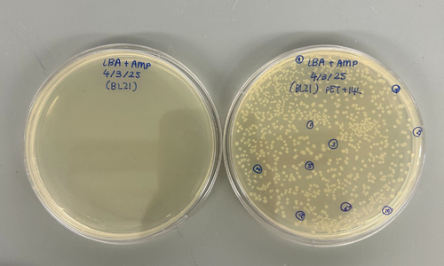

📚 Project Completed — Key Learning
I led a research project to express and characterize tanapoxvirus IL-18BP, a viral immune evasion protein that mimics human IL-18BP (an inflammation regulator). The goal was to determine whether this viral version binds IL-18 more effectively than the human homolog, which could inform understanding of viral immune evasion strategies.
I cloned the TPV IL-18BP gene into a bacterial expression system and worked through the protein production pipeline: optimization of IPTG concentration, lysis methods, incubation temperatures, and timing. Despite systematic variation of these parameters, the protein failed to express at levels suitable for downstream binding assays (SDS-PAGE analysis showed minimal target band).
After exhausting standard expression optimization approaches, I assessed whether continuing made sense. The blocking issue appeared technical (expression, not biological design), and the time investment to troubleshoot further, potentially requiring vector redesign, codon optimization, or alternative host systems, wasn't justified against other research priorities. I documented the work and pivoted to a different project with clearer feasibility.
This experience reinforced the importance of distinguishing technical failure from biological failure, and knowing when to make a strategic pivot rather than chase a single approach indefinitely. Good research requires both persistence and judgment about resource allocation.